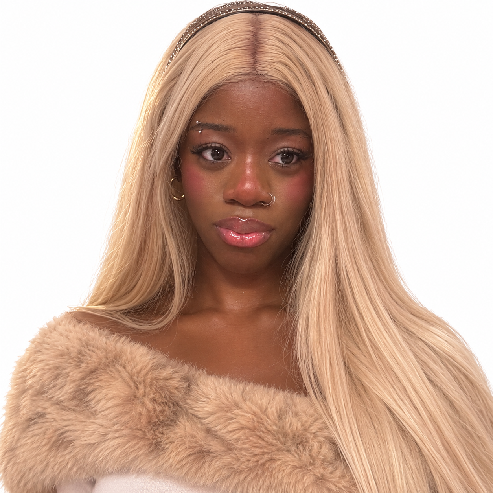

À propos de moi
Je suis actuellement étudiante en Assistant Intégrateur Web au CNAM et je m'intéresse particulièrement au développement web et à la création numérique.
J'aime apprendre de nouvelles choses, tester des idées et donner vie à des projets. Ce qui me plaît dans le développement web, c'est de pouvoir partir de zéro et construire quelque chose à la fois esthétique et fonctionnel.
En parallèle du code, je m'intéresse aussi au graphisme, au design et à la création visuelle. J'aime toucher à différents domaines et laisser libre cours à ma créativité dans mes projets.
Je suis encore en apprentissage, mais toujours motivée à progresser, découvrir de nouvelles technologies et développer mes compétences à travers de nouveaux projets.

Developpement web
html
css
javascript
github
Design et illustration
Figma
Adobe Illustrator
Blender
Vs Code
Soft skills
créativité
organisation
curiosité
travail d'équipe
Formation
2026 – aujourd'hui
DSP Assistant Integrateur Web
CNAM | Paris 03 | Formation axée sur le développement et l'intégration web.
Apprentissage de HTML, CSS, JavaScript et des bases de la programmation, avec une approche centrée sur la création de sites web, le responsive design et l'expérience utilisateur.
2023 – 2025
LLCER Coréen
INALCO | Paris 13 | Études de la langue et de la culture coréennes.
Formation en expression écrite et orale, compréhension, traduction et découverte de la société et de la culture coréennes.
Expériences
Octobre 2026
Création d'un magazine lifestyle en ligne
Dans le cadre de ma formation au CNAM, j'ai réalisé un magazine lifestyle en ligne inspiré de l'esthétique des années 2000, avec une touche plus moderne.
Le site aborde différents univers comme la mode, la beauté et le lifestyle.
J'ai travaillé sur l'identité visuelle, la mise en page et l'intégration des différentes pages en HTML et CSS.
2024-2025
Communication digitale & gestion de communauté
Création et distribution de supports de communication pour des concerts de Wave to Earth.
J'ai notamment conçu plus de 3 000 affiches en 2024, puis plus de 6 000 en 2025.
J'ai également participé à l'organisation de collectes, à la gestion du budget et à la coordination des bannières et des supports destinés aux fans.
Ces projets ont été réalisés avec des délais très courts, parfois en moins de deux semaines, en utilisant notamment Adobe Illustrator, Canva et Notion.